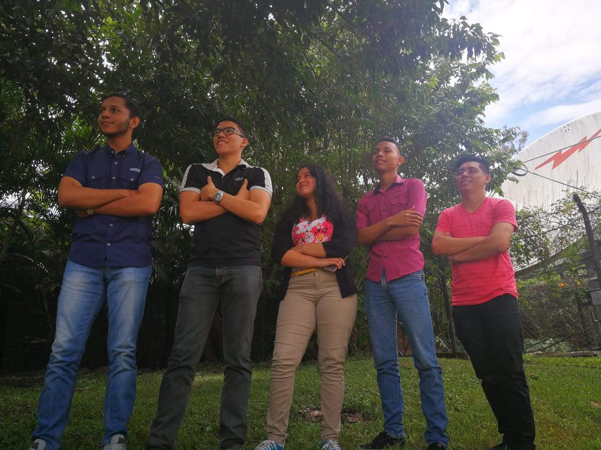
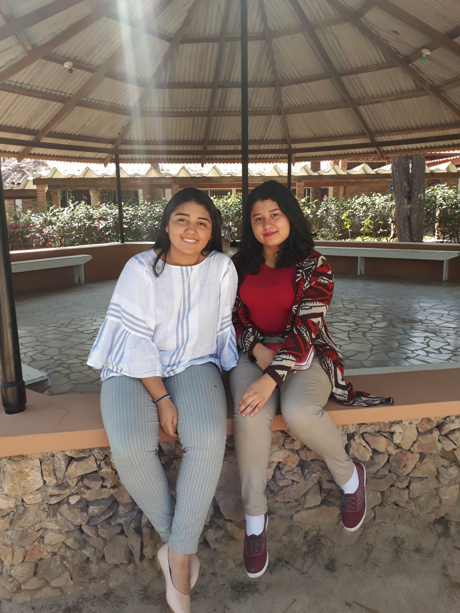
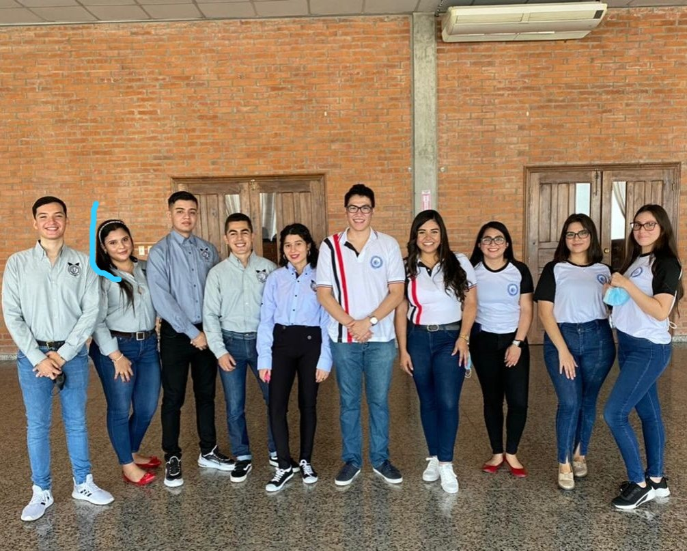

Cuando hice esto
Esta pagina la elaborado el 16 de julio del 2022 , como memorias de cuando fui estudiante de la UNICAH y practicar mis habilidades de desarrollo web. En este momento estoy cursando mi ultimo periodo académico con dos clases.

2019
Primer año
- Hice mi primer retiro espiritual.
- Conocí muchas personas fantásticas.
- Me aprobaron la beca completa para estudiar.
- Tuve mi primera experiencia laboral al trabajar como becario.
- Aprobé mis primeras 15 clases.
- En este año mi peso estuvo en lo máximo que a estado que es 84kg. (Casi 200 libras)
- Saque mis únicos 2 70 de la carrera , fue primera vez en mi vida que pasaba con una nota así una clase.
- Entre en una depresión grave por casi perder la beca porque llegue a bajar mi índice hasta 85% (justo lo mínimo que pedían para mantener la beca)
- Pasaba mis noches de insomnio por lo mismo
- Me enamore de un kks , que eso fue parte de que desatendiera mis estudios pero no fue una razón completa.
- Mi primer periodo saque un total de 90% de índice global y el segundo 93%

2020
Segundo año
- Hice mi segundo retiro espiritual.
- Conocí muchas personas fantásticas.
- Cancele una clase por primera vez (laboratorio de física)
- Participe por primera vez como asistente de matricula al hacer mis horas becas.
- Recibí clases virtuales por primera vez gracias a la pandemia del 2020.
- Inicie el año pesando 76kg
- Empecé hacer dieta y ejercicio en casa.
- Los primeros periodos virtuales no me fue tan bien porque los docentes lo hicieron porque no tenían pedagogía para impartir clases así o hacer evaluaciones.
- Casi pierdo la beca JAJAJA
- El ultimo periodo saque 7 clases para recuperar y ponerme al día , subí mi índice a 90% porque me empecé a esforzar el triple que antes llevando esto a que varios días no me levantara de cama porque tuve burnout y baja autoestima por mi peso.
- Al final del año pesaba 55kg.

2021
Tercer año
- Hice mi primer experiencia desarrollo de software (para producción) con mi equipo para una clínica dental , que actualmente el Dr. de la clínica aun usa.
- Tuve mi primer novio de la Universidad.
- Lo mismo de arriba solo que el segundo.
- Me empezó a ir mejor en las clases , ya que en el periodo solo llevaba clases de la carrera me empezó a ir mejor.
- Al finalizar el año llegue a 92% de promedio global.
- Al finalizar el año pesaba 45kg.
- Casi muero de un derrame cerebral por desvelarme con proyectos porque los compañeros de varios grupos que tuve a largo del año no hacían su trabajo.
- Los primeros periodos virtuales no me fue tan bien porque los docentes lo hicieron porque no tenían pedagogía para impartir clases así o hacer evaluaciones.
- Realice mi tercer retiro espiritual de la universidad vía ZOOM.
- Participe en una sesión de fotos para la publicidad de la carrera de la universidad, la camisa que utilice para ese evento me la obsequio la Decana que estaba en ese entonces.

2022
Cuarto año
- Volví a ver a mis amigos de la universidad en una Reunión (Walter, Alex y Bryan) que tuvimos.
- Realice mi practica profesional
- Termine mi carrera universitaria.
- Finalice la carrera con un promedio de 94%
- Baje nuevamente a 45kg , creo que tengo un TCA (Toda mi vida realmente los he tenido solo que paso de uno a otro)
- Estoy triste porque yo quería laborar de Full Stack Developer y en la practica no me toco eso.
- Lo de mi cerebro empeoro por desvelarme demasiado por tareas o por llorar de la nada , tristeza profunda diario , insomnio ,etc (esto lo he vivido desde la escuela creo que tengo distimia , porque a sido casi todos los dias)
- Para sobrevivir ahora me inyecto neurobión semanal.
- Me hicieron mi primer reconocimiento por Excelencia Académica (La universidad desde 2019 dejo de hacerlo, esto fue por parte de la facultad mas bien)
- Realice mi informe de practica profesional,